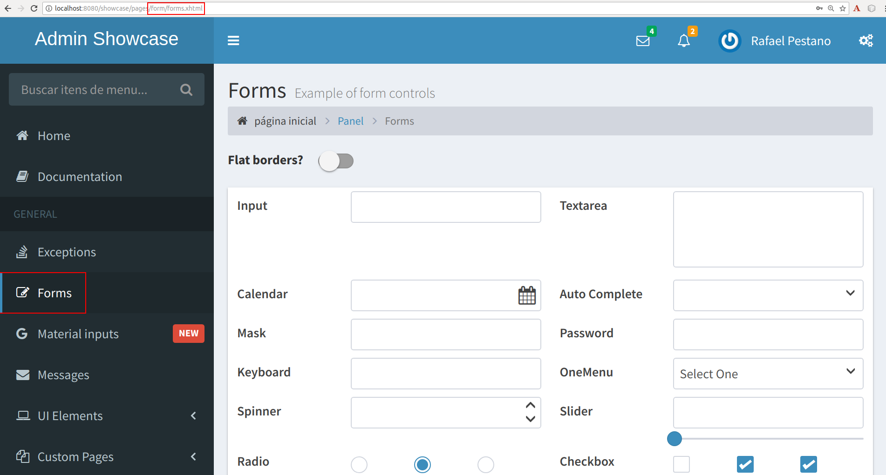
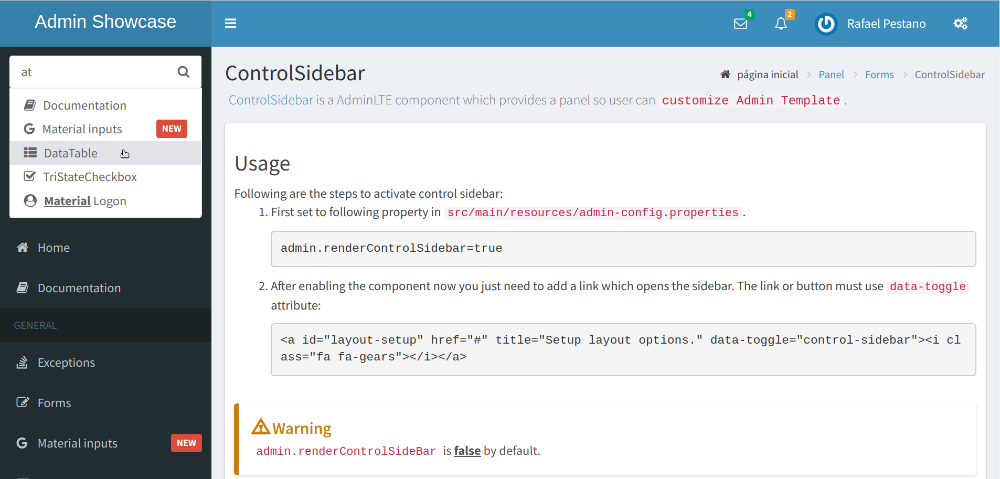
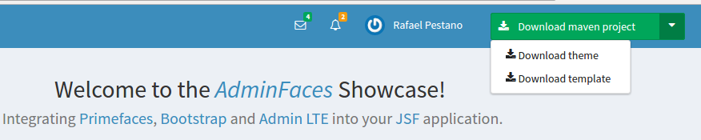

Read this documentation in PDF here.
1. Introduction
AdminFaces is an open source project which brings Bootstrap and AdminLTE to your application via a PrimeFaces theme and a JSF responsive template.
AdminFaces ecosystem is composed by the following projects:
-
Admin Theme: A Primefaces theme based on Bootstrap and Admin LTE where Primefaces components are customized to look like mentioned frameworks.
-
Admin Template: A fully responsive Java Server Faces
admintemplate which is also based on Bootstrap and Admin LTE. -
Admin Showcase: A showcase web application, deployed on openshift, which demonstrates AdminFaces main features and components.
-
Admin Designer: The same showcase application with Admin Theme and Admin Template bundled (instead of being library dependencies) in order to make it easier to customize the theme and the template.
-
A variety of
starters projectsto help you get started with AdminFaces and your favorite stack. -
Admin Persistence: CRUD operations like a breeze for AdminFaces applications based on Apache DeltaSpike Data module.
-
Admin Mobile: A simple Android Studio project which uses Webview to create an hybrid web app based on Admin Showcase.
In subsequent chapters we will drive through each project in detail.
2. Admin Theme
Admin Theme is a PrimeFaces theme where components are styled to look like AdminLTE ones (which in turn are based on Bootstrap).
2.1. Prerequisites
The only pre-requisite is PrimeFaces and Font Awesome.
|
Since PrimeFaces For previous versions or if you need to upgrade FA version you may include it in your pages by using webjars: and add fontawesome webjar in your classpath: |
2.2. Usage
To start using the theme you need the following:
-
Add admin theme to your classpath:
<dependency> <groupId>com.github.adminfaces</groupId> <artifactId>admin-theme</artifactId> <version>1.0.0-RC21-SNAPSHOT</version> </dependency> -
Activate the theme in
web.xml<context-param> <param-name>primefaces.THEME</param-name> <param-value>admin</param-value> </context-param>If you use Admin Template the theme already comes activated.
Now PrimeFaces components are styled like Bootstrap and AdminLTE.
{kind=link}
| See showcase forms page to get an idea. |
2.3. Architecture
The theme uses less as css pre-processor. Each PrimeFaces component has its own less file:
├── admin-lte
│ |
│ ├── bootstrap (1)
│ │
│ ├── skins (2)
│ │
│ └── admin lte less files
│
├── primefaces-admin
│ |
│ ├─ components (3)
│ │ |
│ │ ├── accordeon.less
│ │ │
│ │ ├── autocomplete.less
│ │ │
│ │ └── etc...
│ │
│ ├─ theme.less (4)
│ │
└─ variables.less
| 1 | Bootstrap variables and mixins are used as reference in AdminLTE and admin theme less files |
| 2 | Built in skins |
| 3 | PrimeFaces components |
| 4 | Components and Admin-LTE less files are included in theme.less |
After compilation it will generate the theme.css with Admin-LTE, Bootstrap and Primefaces components.
| Bootstrap.css (from src/META-INF/resources) is included in theme.less but can be removed via maven classifiers |
| Bootstrap less is not maintained in this project only it’s mixins. |
2.4. Theme classifiers
This project uses maven classifiers to offer multiple faces (pum intended) of Admin Theme. Below is the description of each classifier and how to use it.
2.4.1. Default (no classifier)
The default theme comes compressed, with Bootstrap (3.3.7) embedded and uses JSF resource handling for loading images and web fonts.
<dependency>
<groupId>com.github.adminfaces</groupId>
<artifactId>admin-theme</artifactId>
<version>1.0.0-RC21-SNAPSHOT</version>
</dependency>2.4.2. Dev classifier
The dev classifier will bring a theme.css without minification.
<dependency>
<groupId>com.github.adminfaces</groupId>
<artifactId>admin-theme</artifactId>
<version>1.0.0-RC21-SNAPSHOT</version>
<classifier>dev</classifier>
</dependency>2.4.3. Without Bootstrap classifier
The without-bootstrap classifier will bring a theme.css without bootstrap embedded so it’s up to the developer to provide Bootstrap within the application.
<dependency>
<groupId>com.github.adminfaces</groupId>
<artifactId>admin-theme</artifactId>
<version>1.0.0-RC21-SNAPSHOT</version>
<classifier>without-bootstrap</classifier>
</dependency>2.4.4. Without JSF classifier
The without-jsf classifier will bring a theme.css without JSF resource handling so the theme can be used on projects (derived from PrimeFaces) without JSF like Prime React, PrimeUI or PrimeNG.
<dependency>
<groupId>com.github.adminfaces</groupId>
<artifactId>admin-theme</artifactId>
<version>1.0.0-RC21-SNAPSHOT</version>
<classifier>without-jsf</classifier>
</dependency>2.4.5. No Fonts classifier
Since v1.0.0-RC16 web fonts such as glyphicons and Source Sans Pro are embedded inside the theme instead of being queried from a CDN.
This makes the theme work offline or in environments with limited access to the internet but on the other hand results in a larger jar file, ~1MB against ~200kb when fonts are not in the theme.
So if you want a thinner theme you can use the no-fonts classifier:
<dependency>
<groupId>com.github.adminfaces</groupId>
<artifactId>admin-theme</artifactId>
<version>1.0.0-RC21-SNAPSHOT</version>
<classifier>no-fonts</classifier>
</dependency>2.5. Avoiding theme caching
Whenever the theme is updated to a new version in the project users may have to clear their browser caches to get the changes of the new theme.
Sometimes a theme update even introduces conflicts and only clearing browser cache fixes them.
To solve this issues you can use a theme classifier called no-cache:
<dependency>
<groupId>com.github.adminfaces</groupId>
<artifactId>admin-theme</artifactId>
<version>1.0.0-RC21-SNAPSHOT</version>
<classifier>no-cache</classifier>
</dependency>This classifier appends the theme version to the name of theme so you need to change the theme name in web.xml:
<context-param>
<param-name>primefaces.THEME</param-name>
<param-value>admin-1.0.0-RC21-SNAPSHOT</param-value>
</context-param>
There is also a no-cache-no-fonts classifier combining both approaches.
|
2.6. Development
To get your hands dirty with admin theme it is recommended to use Admin Designer in combination with Brackets or any tool that compile less files to css on save.
Using designer, which is backed by wildfly swarm, plus brackets will let you change the components less files and see the results instantly. see this video to see Brackets and Designer in action.
| theme.less is already brackets aware so you just need to change any component less file, save it and see the results in Admin Designer. |
2.7. Snapshots
Theme Snapshots are published to maven central on each commit, to use it just declare the repository below on your pom.xml:
<repositories>
<repository>
<snapshots/>
<id>snapshots</id>
<name>libs-snapshot</name>
<url>https://oss.sonatype.org/content/repositories/snapshots</url>
</repository>
</repositories>3. Admin Template
Admin Template is a fully responsive Java Server Faces admin template based on Bootstrap and Admin LTE.
3.1. Features
Below is a non exhaustive list of notable features brought out of the box by this template:
-
Fully responsive
-
Its based on Bootstrap and AdminLTE two well tested and solid frameworks
-
-
Enhanced mobile experience
-
Material design load bar
-
Material design flat buttons
-
Ripple effect based on materialize css

-
Touch enabled menu to slide in/out

-
Auto show and hide navbar based on page scroll
-
Scroll to top
-
-
Automatically activates (highlight) menu based on current page
 -
Custom error pages
-
Two menu modes,
leftandhorizontalbased menu -
Configurable, see Configuration
-
Breadcrumb based navigation
-
Layout customization via Control Sidebar
-
High resolution and responsible icons based on Glyphycons and FontAwesome
-
Menu itens search
 -
Builtin
darkandlightskins -
Back to previous screen when logging in again after session expiration (or accessing a page via url without being logged in)
{kind=link}
{kind=link}
| Most of the above features can be disabled via configuration mechanism. |
3.2. Usage
Add the following dependency to your classpath:
<dependency>
<groupId>com.github.adminfaces</groupId>
<artifactId>admin-template</artifactId>
<version>1.0.0-RC21-SNAPSHOT</version>
</dependency>|
Admin template will bring the following transitive dependencies: Which you can override in your pom.xml as needed. |
|
Since |
With the template dependency in classpath now you can use admin facelets template into your JSF pages.
3.2.1. Example
Consider the following sample page:
<?xml version="1.0" encoding="UTF-8"?>
<ui:composition xmlns="http://www.w3.org/1999/xhtml"
xmlns:ui="http://java.sun.com/jsf/facelets"
xmlns:p="http://primefaces.org/ui"
template="/admin.xhtml"> (1)
<ui:define name="head">
<title>Admin Starter</title>
</ui:define>
<ui:define name="logo-lg">
Admin Starter
</ui:define>
<ui:define name="logo-mini">
Admin
</ui:define>
<ui:define name="menu">
<ul class="sidebar-menu" data-widget="tree">
<li>
<p:link href="/index.xhtml" onclick="clearBreadCrumbs()">
<i class="fa fa-home"></i>
<span>Home</span>
</p:link>
</li>
<li class="header">
General
</li>
<li>
<p:link href="/car-list.xhtml">
<i class="fa fa-car"></i>
<span>Cars</span>
</p:link>
</li>
</ul>
</ui:define>
<ui:define name="top-menu">
<ui:include src="/includes/top-bar.xhtml"/>
</ui:define>
<ui:define name="title">
<h2 class="align-center">
Welcome to the <span class="text-aqua"> <i><a href="https://github.com/adminfaces/admin-starter" target="_blank"
style="text-transform: none;text-decoration: none"> AdminFaces Starter</a></i></span> Project!
<br/>
<small>Integrating <p:link value="Primefaces" href="http://primefaces.org"/>, <p:link value="Bootstrap"
href="http://getbootstrap.com/"/> and
<p:link value="Admin LTE" href="https://almsaeedstudio.com/themes/AdminLTE/index2.html/"/> into your
<p:link value="JSF" href="https://javaserverfaces.java.net/"/> application.
</small>
</h2>
</ui:define>
<ui:define name="description">
A page description
</ui:define>
<ui:define name="body">
<h2>Page body</h2>
</ui:define>
<ui:define name="footer">
<a target="_blank"
href="https://github.com/adminfaces/">
Copyright (C) 2017 - AdminFaces
</a>
<div class="pull-right hidden-xs" style="color: gray">
<i>1.0.0</i>
</div>
</ui:define>
</ui:composition>| 1 | /admin.xhtml is the location of the template |
The above page definition renders as follows:
{kind=link}
There are also other regions defined in admin.xhtml template, see here.
|
A good practice is to define a template on your application which extends the admin template, see admin-starter application template here. So in your pages you use your template instead of admin. |
3.3. Application template
Instead of repeating sections like menu, logo, head and footer on every page we can create a template inside our application which uses admin.xhtml as template:
<?xml version="1.0" encoding="UTF-8"?>
<ui:composition xmlns="http://www.w3.org/1999/xhtml"
xmlns:ui="http://java.sun.com/jsf/facelets"
xmlns:p="http://primefaces.org/ui"
template="/admin.xhtml">
<ui:define name="head">
<title>Admin Starter</title>
<h:outputStylesheet library="css" name="starter.css"/>
</ui:define>
<ui:define name="logo-lg">
Admin Starter
</ui:define>
<ui:define name="logo-mini">
Admin
</ui:define>
<ui:define name="menu">
<ul class="sidebar-menu" data-widget="tree">
<li>
<p:link href="/index.xhtml" onclick="clearBreadCrumbs()">
<i class="fa fa-home"></i>
<span>Home</span>
</p:link>
</li>
<li class="header">
General
</li>
<li>
<p:link href="/car-list.xhtml">
<i class="fa fa-car"></i>
<span>Cars</span>
</p:link>
</li>
</ul>
</ui:define>
<ui:define name="top-menu">
<ui:include src="/includes/top-bar.xhtml"/>
</ui:define>
<ui:define name="footer">
<a target="_blank"
href="https://github.com/adminfaces/">
Copyright (C) 2017 - AdminFaces
</a>
<div class="pull-right hidden-xs" style="color: gray">
<i>1.0.0</i>
</div>
</ui:define>
</ui:composition>And now the page can just define its content and title:
<?xml version="1.0" encoding="UTF-8"?>
<ui:composition xmlns="http://www.w3.org/1999/xhtml"
xmlns:ui="http://java.sun.com/jsf/facelets"
xmlns:p="http://primefaces.org/ui"
template="/WEB-INF/templates/template.xhtml">
<ui:define name="title">
A page title
</ui:define>
<ui:define name="description">
A page description
</ui:define>
<ui:define name="body">
<h2>Page body</h2>
</ui:define>
</ui:composition>3.3.1. Switching between left menu and top menu templates
AdminFaces supports two layout modes, one is left based menu and the other is top based menu.
The user can change layout modes via control sidebar but to make it work you have to use LayoutMB to define page template:
<?xml version="1.0" encoding="UTF-8"?>
<ui:composition xmlns="http://www.w3.org/1999/xhtml"
xmlns:ui="http://java.sun.com/jsf/facelets"
xmlns:p="http://primefaces.org/ui"
template="#{layoutMB.template}">
<!-- page content -->
</ui:composition>As a convention over configuration LayoutMB will load templates from the following locations:
-
webapp/WEB-INF/templates/template.xhtmlandresources/META-INF/resources/templates/template.xhtmlfor theleft menubased template -
webapp/WEB-INF/templates/template-top.xhtmlandresources/META-INF/resources/templates/template-top.xhtmlfor horizontal menu layout.
If you don’t provide a Application template then built in admin.xhtml and admin-top.xhtml templates will be used.
|
See admin-starer templates for a reference: https://github.com/adminfaces/admin-starter/tree/master/src/main/webapp/WEB-INF/templates
| Admin starters archetypes already come with both templates configured. |
3.4. Configuration
Template configuration is made through admin-config.properties file present in src/main/resources folder.
Here are the default values as well as its description:
admin.loginPage=login.xhtml (1) admin.indexPage=index.xhtml (2) admin.dateFormat= (3) admin.breadcrumbSize=5 (4) admin.renderMessages=true (5) admin.renderAjaxStatus=true (6) admin.disableFilter=false (7) admin.renderBreadCrumb=true (8) admin.enableSlideMenu=true (9) admin.enableRipple=true (10) admin.rippleElements= .ripplelink,button.ui-button,.ui-selectlistbox-item,.ui-multiselectlistbox-item,.ui-selectonemenu-label,.ui-selectcheckboxmenu,\ .ui-autocomplete-dropdown, .ui-autocomplete-item ... (the list goes on) (11) admin.skin=skin-blue (12) admin.autoShowNavbar=true (13) admin.ignoredResources= (14) admin.loadingImage=ajaxloadingbar.gif (15) admin.extensionLessUrls=false (16) admin.renderControlSidebar=false (17) admin.controlSidebar.showOnMobile=false (18) admin.controlSidebar.leftMenuTemplate=true (19) admin.controlSidebar.fixedLayout=false (20) admin.controlSidebar.boxedLayout=false (21) admin.controlSidebar.sidebarCollapsed=false (22) admin.controlSidebar.expandOnHover=false (23) admin.controlSidebar.fixed=false (24) admin.controlSidebar.darkSkin=true (25) admin.rippleMobileOnly=true (26) admin.renderMenuSearch=true (27) admin.autoHideMessages=true (28) admin.messagesHideTimeout=2500 (29) admin.iconsEffect=true (30)
| 1 | login page location (relative to webapp). It will only be used if you configure Admin Session. |
| 2 | index page location. User will be redirected to it when it access app root (contextPath/). |
| 3 | Date format used in error page (500.xhtml), by default it is JVM default format. |
| 4 | Number of breadcrumbs to queue before removing the older ones. |
| 5 | When false, p:messages defined in admin template will not be rendered. |
| 6 | When false ajaxStatus, which triggers the loading bar on every ajax request, will not be rendered. |
| 7 | Disables AdminFilter, responsible for redirecting user after session timeout, sending user to logon page when it is not logged in among other things. |
| 8 | When false, the breadCrumb component, declared in admin template, will not be rendered. |
| 9 | If true will make left menu touch enable (can be closed or opened via touch). Can be enable/disabled per page with <ui:param name="enableSlideMenu" value="false". |
| 10 | When true it will create a wave/ripple effect on elements specified by rippleElements. |
| 11 | A list of comma separated list of (jquery) selector which elements will be affected by ripple effect. |
| 12 | Default template skin. |
| 13 | Automatic shows navbar when users scrolls page up on small screens. Can be enable/disabled per page with <ui:param name="autoShowNavbar" value="false". |
| 14 | Comma separated resources (pages or urls) to be skiped by AdminFilter. Ex: /rest, /pages/car-list. Note that by default the filter skips pages under CONTEXT/public/ folder. |
| 15 | image used for the loading popup. It must be under webapp/resources/images folder. |
| 16 | Removes extension suffix from breadCrumb links. |
| 17 | When true it will activate control sidebar component. |
| 18 | When true control sidebar will be also rendered on mobile devices. |
| 19 | Switches layout between left (default) and top menu. |
| 20 | Toggles fixed layout where navbar is fixed on the page. |
| 21 | Toggles boxed layout which is helpful when working on large screens because it prevents the site from stretching very wide. |
| 22 | When true left sidebar will be collapsed. |
| 23 | When true left sidebar will expand on mouse hover. |
| 24 | When true control sidebar will be fixed on the page. |
| 25 | Changes control sidebar skin between dark and light. |
| 26 | When true the ripple effect will be enabled only on mobile (small) screens. |
| 27 | Enables or disables menu search. |
| 28 | If true PrimeFaces info messages will be hidden after a certain timeout. |
| 29 | Timeout to hide info messages. Note that the timeout is composed by configured timeout + number of words in message. |
| 30 | Enables material effect when icons (e.g modal close, calendar) are clicked. |
| You don’t need to declare all values in your admin-config.properties, you can specify only the ones you need in order to change. |
Since vRC16 config properties can be passed as Java system properties.
|
| Controlsidebar entries (admin.controlSidebar.xxx) will be used only for initial/default values because they will be stored on browser local storage as soon as user changes them. |
3.5. Admin Session
AdminSession is a simple session scoped bean which controls whether user is logged in or not.
public boolean isLoggedIn(){
return isLoggedIn; //always true by default
}
By default the user is always logged in and you need to override it (by using bean specialization or via injection and calling setIsLoggedIn() method) to change its value, see Overriding AdminSession.
When isLoggedIn is false you got the following mechanisms activated:
-
Access to any page, besides the login, redirects user to login;
-
When session is expired user is redirected to logon and current page (before expiration) is saved so user is redirected back to where it was before session expiration.
| It is up to you to decide whether the user is logged in or not. |
3.5.1. Overriding AdminSession
There are two ways to override AdminSession default value which is specialization and injection.
AdminSession Specialization
A simple way to change AdminSession logged in value is by extending it:
import javax.enterprise.context.SessionScoped;
import javax.enterprise.inject.Specializes;
import com.github.adminfaces.template.session.AdminSession;
import org.omnifaces.util.Faces;
import java.io.Serializable;
@SessionScoped
@Specializes
public class LogonMB extends AdminSession implements Serializable {
private String currentUser;
private String email;
private String password;
private boolean remember;
public void login() throws IOException {
currentUser = email;
addDetailMessage("Logged in successfully as <b>" + email + "</b>");
Faces.getExternalContext().getFlash().setKeepMessages(true);
Faces.redirect("index.xhtml");
}
@Override
public boolean isLoggedIn() {
return currentUser != null;
}
//getters&setters
}3.5.2. AdminSession Injection
Another way is to inject it into your security authentication logic:
import com.github.adminfaces.template.session.AdminSession;
import org.omnifaces.util.Messages;
import org.omnifaces.util.Faces;
@SessionScoped
@Named("authorizer")
public class CustomAuthorizer implements Serializable {
private String currentUser;
@Inject
AdminSession adminSession;
public void login(String username) {
currentUser = username;
adminSession.setIsLoggedIn(true);
Messages.addInfo(null,"Logged in sucessfully as <b>"+username+"</b>");
Faces.redirect("index.xhtml");
}
}
As isLoggedIn is true by default you need to set it to false on application startup so user is redirected to login page. This step is not needed when using AdminSession Specialization.
|
3.6. Error Pages
The template comes with custom error pages like 403, 404, 500, ViewExpired and OptimisticLock.
User is going to be redirected to 500.xhtml whenever a 500 response code is returned in a request.
The page will also be triggered when a Throwable is raised (and not catch).
Here is how 500 page look like:
{kind=link}
User is redirected to 403.xhtml whenever a 403 response code is returned in a request. The page will also be triggered when a com.github.adminfaces.template.exception.AccessDeniedException is raised.
{kind=link}
User will be redirected to 404.xhtml whenever a 404 response code is returned from a request.
{kind=link}
When a JSF javax.faces.application.ViewExpiredException is raised user will be redirected to expired.xhtml.
{kind=link}
When a JPA javax.persistence.OptimisticLockException is thrown user will be redirected to optimistic.xhtml.
{kind=link}
3.6.1. Providing custom error pages
You can provide your own custom pages (and other status codes) by configuring them in web.xml, example:
<error-page>
<error-code>404</error-code>
<location>/404.xhtml</location>
</error-page>
<error-page>
<error-code>500</error-code>
<location>/500.xhtml</location>
</error-page>
<error-page>
<exception-type>java.lang.Throwable</exception-type>
<location>/500.xhtml</location>
</error-page>3.6.2. Overriding error pages
You can also override error pages by placing the pages (with same name) described in Error Pages section on the root of your application (webapp/).
3.7. Internationalization
Labels in error pages and control sidebar are provided via JSF resource bundle mechanism.
Following are the default labels in admin resource bundle:
#general
admin.version=${project.version}
label.go-back=Go back to
#403
label.403.header=403
label.403.message=Access denied! You do not have access to the requested page.
#404
label.404.header=404
label.404.message=Oops! Page not found
#500
label.500.header=500
label.500.message=Oops! Something went wrong
label.500.title=Unexpected error
label.500.detail=Details
#expired
label.expired.title=View expired
label.expired.message= The requested page could not be recovered.
label.expired.click-here= Click here to reload the page.
#optimistic
label.optimistic.title=Record already updated
label.optimistic.message= The requested record has been already updated by another user.
label.optimistic.click-here= Click here to reload the updated record from database.
#controlsidebar
controlsidebar.header=Layout Options
controlsidebar.label.restore-defaults=Restore defaults
controlsidebar.label.menu-horientation=Left menu layout
controlsidebar.txt.menu-horientation=Toggle menu orientation between <b class\="sidebar-bold">left</b> and <b class\="sidebar-bold">top</b> menu.
controlsidebar.label.fixed-layout=Fixed Layout
controlsidebar.txt.fixed-layout=Activate the fixed layout, if checked the top bar will be fixed on the page.
controlsidebar.label.boxed-layout=Boxed Layout
controlsidebar.txt.boxed-layout=Activate the boxed layout.
controlsidebar.label.sidebar-collapsed=Collapsed Sidebar
controlsidebar.txt.sidebar-collapsed=If checked the sidebar menu will be collapsed.
controlsidebar.label.sidebar-expand-hover=Sidebar Expand on Hover
controlsidebar.txt.sidebar-expand-hover=If checked the left sidebar will expand on hover.
controlsidebar.label.sidebar-slide=Control Sidebar fixed
controlsidebar.txt.sidebar-slide=If checked control sidebar will be fixed on the page.
controlsidebar.label.sidebar-skin=Dark Sidebar Skin
controlsidebar.txt.sidebar-skin=If checked <b class\="sidebar-bold">dark</b> skin will be used for control sidebar, otherwise <b class\="sidebar-bold">light</b> skin will be used.
controlsidebar.header.skins=Skins
|
You can provide your own language bundle adding a file named admin_YOUR_LANGUAGE.properties in your application Don’t forget to add it as |
| You can contribute your language locale to AdminFaces, check here the current supported locales. |
3.8. Control Sidebar
ControlSidebar is a component which provides a panel so user can customize the template layout:
{kind=link}
Options selected by user are stored on browser local storage so they are remembered no matter the user logs off the application.
3.8.1. Usage
To enable the control sidebar you need to add the following entry in src/main/resources/admin-config.properties:
admin.renderControlSidebar=true
And then add a link or button on your page which opens the sidebar. The link or button must use data-toggle attribute:
<a href="#" id="layout-setup" data-toggle="control-sidebar" class="hidden-sm hidden-xs"><i class="fa fa-gears"></i></a>
On admin-starter the link is located on top-bar.xhtml.
Click here to see controlsidebar in action on admin showcase.
By default the control sidebar comes only with the configuration tab but you can define additional tabs by defining controlsidebar-tabs and controlsidebar-content on your template. An example can be found on admin-starter template.
|
ControlSidebar is hidden on mobile devices by default. You can change this on admin.controlSidebar.showOnMobile=true Also don’t forget to remove the <a href="#" class="ui-link ui-widget" data-toggle="control-sidebar"><i class="fa fa-gears"></i></a> |
3.9. BreadCrumbs
Breadcrumbs based navigation indicates the location of the user within the site’s hierarch.
AdminFaces provides a composite component which will manage breadCrumbs as user navigates through the pages.
3.9.1. Usage
There are three ways to use the component, via adm:breadcrumb composite component, by using a ui:param or programmatically.
-
Using via
composite componentTo use the composite component just declare the
admin namespaceand provide a title and the link, following is car-form breadCrumb declaration inadmin starter:car-form.xhtml<ui:composition xmlns="http://www.w3.org/1999/xhtml" xmlns:adm="http://github.com/adminfaces"> <ui:define name="body"> <adm:breadcrumb title="#{empty carFormMB.id ? 'New Car' : 'Car '.concat(carFormMB.id)}" link="car-form.jsf?id=#{carFormMB.id}"/> //other page components </ui:define> </ui:composition>So when user enters the car-form page a breadCrumb will be created based on currently edited car or 'New Car' label will be used when adding a Car:
The link is the page where user will be redirected when clicking the breadCrumb link.
If the link is not provided then user will be redirected to the page where the breaCrumb is declared. -
Usage via
title ui:paramAn easy way, but not so flexible as above, of creating breadCrumbs is to use the
ui:param name="titleon the page, following is admin-starter car-list page:<ui:composition xmlns="http://www.w3.org/1999/xhtml" xmlns:adm="http://github.com/adminfaces"> <ui:param name="title" value="Car listing"/> </ui:composition>When the title param is present on the page, a breadCrumb with title as ui:param
valuewill be added. The breadCrumb link will redirect user to the page where the ui:param is declared.Declare the param as direct child of ui:composionotherwise it will not work in MyFaces JSF implementation if you e.g declare it insidebodysection. -
Adding breadCrumb
programmaticallyTo use breadcrumb in Java you need to
@Injectthe BreadCrumbMB component:@Inject private BreadCrumbMB breadCrumbMB; public void add(){ breadCrumbMB.add(new BreadCrumb(link,title)); }
{kind=link}
3.9.2. Disable breadCrumbs
You can disable breadCrumbs per page or for all pages.
-
Disable per page
To disable breadCrumbs in a page just declare:
<ui:param name="renderBreadCrumbs" value="false"/>. For an example see admin starter index page. -
Disable for all pages
Just add
admin.renderBreadCrumb=falseentry in admin-config.properties undersrc/main/resources/folder. For details see configuration section.
3.10. Snapshots
Template Snapshots are published to maven central on each commit, to use it just declare the repository below on your pom.xml:
<repositories>
<repository>
<snapshots/>
<id>snapshots</id>
<name>libs-snapshot</name>
<url>https://oss.sonatype.org/content/repositories/snapshots</url>
</repository>
</repositories>4. Admin Showcase
The showcase is a web application which demonstrates AdminFaces main features and components. It uses Admin Theme and Admin Template
4.1. Demo
A live demo is available on Openshift here: http://admin-showcase-admin.1d35.starter-us-east-1.openshiftapps.com/showcase
5. Admin Starters
Admin Starters are sample projects to get you started with AdminFaces. Following are current starters, access their github README for running instructions:
-
Admin Starter: The default starter is a simple JavaEE 6(+) application without any persistence layer. You can run it on a JavaEE 6 or newer server and also in wildfly-swarm.
-
Admin Starter Persistence: Admin Starter application with persistence layer based on Apache DeltaSpike Data module via Admin Persistence;
-
Admin Starter Tomcat: Admin Starter application for Tomcat;
-
Admin Starter SpringBoot: Admin Starter application using SpringBoot and JoinFaces.
-
Admin Starter Shiro: Admin Starter application using Apache Shiro for authentication.
-
Admin Starter Security: Admin Starter application using
JavaEE 8security API for authentication and authorization. -
Admin Starter Spring Security: Admin Starter application using SpringBoot, JoinFaces and Spring Security.
| Most starters have maven archetypes (see here) and images published on docker hub so you can easily see them working locally. |
5.1. Demo
A live demo is available on Openshift here: http://admin-starter-admin.1d35.starter-us-east-1.openshiftapps.com/admin-starter/
6. Admin Designer
The aim of Admin Designer is to make it easier to customize Admin theme and Admin Template.
6.1. What is it?
This is the same Admin Showcase application with admin template and admin theme bundled inside instead of being project dependencies.
It uses Wildfly Swarm to run the exploded application so one can change the theme or template and see the modifications without needing to restart the application.
6.2. Objectives
The initial idea was to speed AdminFaces development but it turns out that it can easy contributions from non Java developers (like designers and frontend developers) as the project is about front end components and layout.
Also another great feature of Admin Designer is the possibility to download the customized project as a maven project.
|
The downloaded project is the Admin Starter with modified admin theme and template embedded in the project.
|
6.3. How it works
In application root directory:
-
First start the application by running the command:
./mvnw wildfly-swarm:run (or mvnw.cmd wildfly-swarm:run)
-
Second edit any less file in directory
src/main/resources/less. -
Now to compile the application using:
./mvnw compile (or mvnw.cmd compile)
If you don’t want to compile every time you change a less file, use the flag -Dlesscss.watch=true. Or use a tool like brackets with less extension installed. -
Finally when you’re done you can download the customized
themeandtemplateas a sample maven project or as separated jar files;
The changes made to less files should be visible in running application http://localhost:8080/showcase
| There is no need to stop and run the application again. |
You can see this workflow in the following video: https://youtu.be/X1UEpN942s0
7. Admin Persistence
The Admin Persistence module aims to simplify CRUD operations on AdminFaces applications.
| It actually works without AdminFaces. |
7.1. Prerequisites
This module depends on JSF, CDI and JPA and was tested with respective implementations and versions:
JSF |
CDI |
JPA |
Mojarra 2.2 |
Weld 2.3 |
Hibernate 5.0 |
Mojarra 2.2 |
Weld 2.2 |
Hibernate 4.3 |
MyFaces 2.1 |
OpenWebBeans 1.7.4 |
Eclipselink 2.6 |
7.2. Usage
Following are the steps you need to follow in order to use Admin Persistence:
-
Classpath
First include it in your classpath:
<dependency> <groupId>com.github.adminfaces</groupId> <artifactId>admin-persistence</artifactId> <version>1.0.0</version> </dependency>Admin persistence will bring the following transitive dependencies:
<dependency> <groupId>org.primefaces</groupId> <artifactId>primefaces</artifactId> <version>6.2</version> </dependency> <dependency> <groupId>org.apache.deltaspike.core</groupId> <artifactId>deltaspike-core-impl</artifactId> <version>1.8.0</version> </dependency> <dependency> <groupId>org.apache.deltaspike.core</groupId> <artifactId>deltaspike-core-api</artifactId> <version>1.8.0</version> </dependency> <dependency> <groupId>org.apache.deltaspike.modules</groupId> <artifactId>deltaspike-data-module-api</artifactId> <version>1.8.0</version> <scope>compile</scope> </dependency> <dependency> <groupId>org.apache.deltaspike.modules</groupId> <artifactId>deltaspike-data-module-impl</artifactId> <version>1.8.0</version> <scope>compile</scope> </dependency>Of cource you can override them in your pom.xml as needed.
-
JPA Metamodel
As Admin Persistence uses DeltaSpike
typesafecriteria you’ll need to generate JPA metamodel. There are various ways to do that, here is a maven plugin example:<plugin> <groupId>com.mysema.maven</groupId> <artifactId>apt-maven-plugin</artifactId> <version>1.1.3</version> <executions> <execution> <id>metamodel</id> <goals> <goal>process</goal> </goals> <configuration> <outputDirectory>target/generated-sources/metamodel</outputDirectory> <processor>org.hibernate.jpamodelgen.JPAMetaModelEntityProcessor</processor> </configuration> </execution> </executions> <dependencies> <dependency> <groupId>org.hibernate</groupId> <artifactId>hibernate-jpamodelgen</artifactId> <version>4.3.8.Final</version> </dependency> </dependencies> </plugin>See this tutorial for configuring it on your IDE. -
Entity Manager
Admin persistence needs an exposed
entity manageras CDI Bean, you can do that by using a CDI producer:@ApplicationScoped public class EntityManagerProducer { @PersistenceContext EntityManager em; @Produces public EntityManager produce() { return em; } } -
Persistence Entity
Every JPA entity must be typed as a PersistenceEntity, it is an interface with only a method,
getId():import com.github.adminfaces.persistence.model.PersistenceEntity; @Entity @Table(name = "car") public class Car implements PersistenceEntity { @Override public Integer getId() { return id; } }You can extendBaseEntity to gainequals(),hashCode()andtoString(). -
Service layer
Now to create a service which will hold your business logic you need to extend CrudService:
@Stateless public class CarService extends CrudService<Car, Integer> { }Full source code for CarService can be found here. For some examples of CrudService usage see integration tests here. -
Controller
Finally on the controller layer (JSF managed beans) you need to extend CrudMB which will enable CRUD support for your JSF pages:
@Named @ViewScoped public class CarListMB extends CrudMB<Car> implements Serializable { @Inject CarService carService; @Inject @Service CrudService<Car, Integer> crudService; //generic injection @Inject public void initService() { setCrudService(carService); (1) } }1 Needed by CrudMB otherwise it will throw an exception asking for CrudService initialization. You can use @BeanService annotation (since 1.0.0-RC9) to provide CrudService:
@Named @ViewScoped @BeanService(CarService.class)//use annotation instead of setter injection public class CarListMB extends CrudMB<Car> implements Serializable { }Full source code for CarListMB can be found here.
7.3. Pagination
Real pagination involves lots of boilerplate code, in admin-persistence it is a matter of using a Primefaces lazy datatable and bind it to the CrudMB list variable:
<p:dataTable widgetVar="carsTable" var="c" value="#{carListMB.list}"
rows="5" rowKey="#{c.id}"
lazy="true" paginator="true"
<!-- other attributes -->| Full source code for this xhtml page can be found here. |
7.4. Pagination filtering
For filtering on the lazy datatable you just need to override configRestrictions method in the managed bean’s service (the service we set with setCrudService in CarListMB) and add your restrictions based on a filter:
protected Criteria<Car, Car> configRestrictions(Filter<Car> filter) {
Criteria<Car, Car> criteria = criteria();
//create restrictions based on parameters map
if (filter.hasParam("id")) {
criteria.eq(Car_.id, filter.getIntParam("id"));
}
if (filter.hasParam("minPrice") && filter.hasParam("maxPrice")) {
criteria.between(Car_.price, filter.getDoubleParam("minPrice"), filter.getDoubleParam("maxPrice"));
} else if (filter.hasParam("minPrice")) {
criteria.gtOrEq(Car_.price, filter.getDoubleParam("minPrice"));
} else if (filter.hasParam("maxPrice")) {
criteria.ltOrEq(Car_.price, filter.getDoubleParam("maxPrice"));
}
//create restrictions based on filter entity
if (has(filter.getEntity())) {
Car filterEntity = filter.getEntity();
if (has(filterEntity.getModel())) {
criteria.likeIgnoreCase(Car_.model, "%"+filterEntity.getModel());
}
if (has(filterEntity.getPrice())) {
criteria.eq(Car_.price, filterEntity.getPrice());
}
if (has(filterEntity.getName())) {
criteria.likeIgnoreCase(Car_.name, "%"+filterEntity.getName());
}
}
return criteria;
}|
|
| Any datatable update (ajax or not) will trigger the configRestrictions. |
Besides filtering the filter helper class also holds pagination and sort information.
|
|
By default filters are saved on You can change this behavior by overriding keepFiltersInSession method on your Bean: CarListMB
|
7.5. Sample application
For an example project using Admin Persistence see admin-starter-persistence.
8. Admin Mobile
Admin Mobile is a simple Android Studio project which uses Webview to create an hybrid web app based on Admin Showcase.
The app is a proof of concept to check AdminFaces user experience in mobile apps. The following behaviours will be enabled only on this kind of devices:
-
Loading bar based on google material design;
-
Go to top link at the bottom right corner of the page;
-
Larger icons on panel, dialog and messages;
-
Some components like growl, tabview and datatable are optimized for mobile devices;
-
Ripple/waves effect based on materialize;
-
Slideout menu